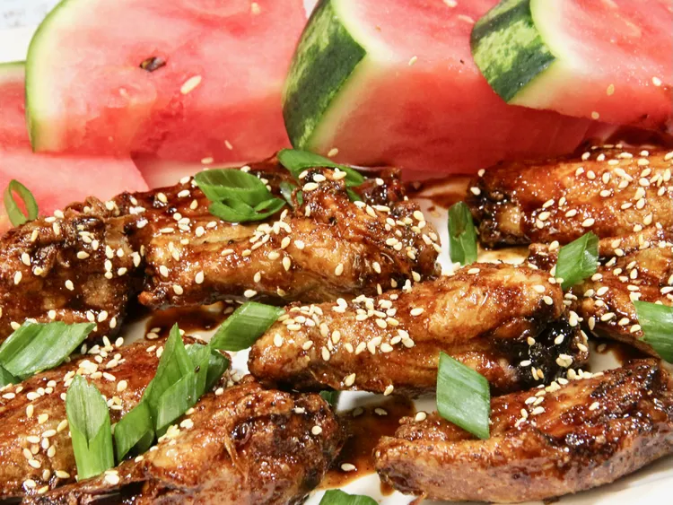

Gochujang Chicken Wings
This baking powder coating will guarantee you crispy chicken wings with no deep frying required.
The sauce is spicy yet a bit savory, sweet, and sticky.

Ingredients
- Coating:
- 2 tablespoons baking powder
- 1 teaspoon salt
- 1 teaspoon freshly ground black pepper
- 1 teaspoon garlic powder
- ½ teaspoon onion powder
- 2 pounds chicken wings, separated at the joint
- Sauce:
- 3 tablespoons gochujang (Korean hot and sweet pepper paste), or to taste
- 2 tablespoons reduced-sodium soy sauce
- 1 ½ tablespoons honey
- 1 tablespoon rice vinegar
- 1 teaspoon sesame oil
- 1 teaspoon ground ginger
- Garnish
- 2 tablespoons sliced green onions
- 2 teaspoons sesame seeds
Directions
- Preheat the oven to 425 degrees F (220 degrees C). Line a large baking sheet with foil.
Top with a wire rack which has been lightly sprayed with non-stick cooking spray; set aside.
- Whisk baking powder, salt, pepper, garlic powder, and onion powder together in a small bowl.
Add mixture to a large resealable plastic bag.
- Pat the wings dry with a paper towel, and add some to the bag, shaking and tossing until coated.
Shake off excess mixture and set aside. Repeat this procedure with the remaining wings.
Place wings on the rack being sure not to overcrowd.
- Move the baking sheet to the oven and cook for 20 minutes.
Flip the wings, and bake until browned and crispy, about 15 minutes more.
An instant-read thermometer inserted into the center should read at least 165 degrees F (74 degrees C).
If you want your wings extra crispy, place under the broiler for a couple of minutes.
You want them cooked through but still moist, so keep an eye on them to be sure they don't burn.
- While the wings are baking, whisk gochujang, soy sauce, honey, rice vinegar, sesame oil, and ginger powder in a large bowl.
When chicken wings are done cooking, immediately add them to the bowl, tossing until all are coated.
- Remove to a serving platter, and garnish with green onions and sesame seeds.
Cooks Note:
Gochujang has many variations with different levels of spiciness. I use the hot and sweet sauce version which is still spicy.
Whatever you use, just be sure to taste it and adjust the amount of gochujang to your taste preference.
Your cooking time may vary depending on the size of your wings. I usually allow 35 minutes for medium size wings.